![]()
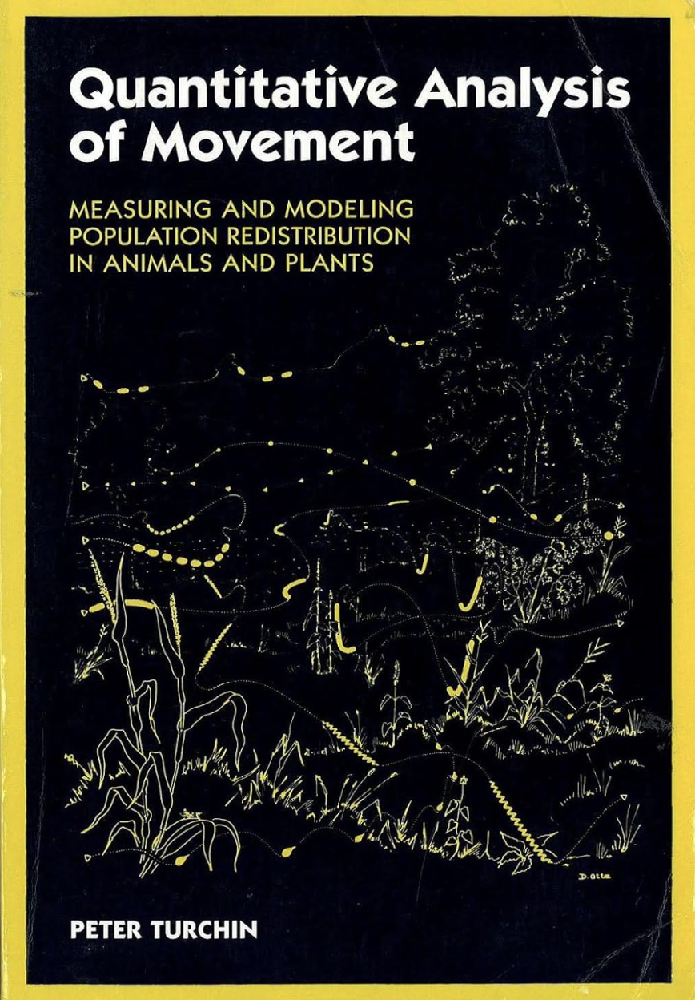
Einführung in die Bewegungsökologie
Schritte, Richtungen & Zufallsbewegungen
June 14, 2026
Wo sind wir?
- 13.04.2026: E01: Einführung
- 20.04.2026: E02: Erfassung von Wildtieren
- 27.04.2026: E03: Verbreitung 1
- 05.05.2026: E04: Verbreitung 2
- 05.2026: E05: Occupancy-Modelle 1 (online)
- 18.05.2026: E06: Occupancy-Modelle 2
- 01.06.2026: E07: Abundanz 1
- 08.06.2026: E08: Abundanz 2
- 15.06.2026: E09: Telemetrie 1: Random Walks etc.
- 22.06.2026: E10: Telemetrie 2: Streifgebiete
- 29.06.2026: E11: Telemetrie 3: Habitatselektion (online)
- 06.07.2026: E12: Telemetrie 4: Habitatselektion
Kurze Wiederholung/Vorschau

Warum Bewegungsökologie?
Tiere in Raum und Zeit verstehen
Tierbewegung ist ein fundamentaler ökologischer Prozess:
- Ressourcenzugang — Nahrung, Wasser, Partner finden
- Habitatnutzung — Welche Lebensräume werden gewählt oder gemieden?
- Dispersion & Ausbreitung — Wie entstehen Metapopulationen?
- Verhaltensökologie — Nahrungssuche, Ruhe, Flucht als Verhaltenszustände
- Naturschutz — Wildtierkorridore, Barrieren (Straßen), Klimawandel
- Epidemiologie — Kontaktraten bestimmen Krankheitsausbreitung
Zwei Perspektiven auf Tierbewegung
Lagrange’sche Sichtweise
- Individuelle Tiere werden verfolgt
- GPS-Halsbänder, Sender, Telemetrie
- Studie auf Ebene der einzelnen Individuen
- Fragestellung: Wo geht dieses Tier hin?
Euler’sche Sichtweise
- Tiere werden von fixen Punkten beobachtet
- Beispielsweise Kamerafallen oder Transekte
- Studie auf Populationsebene
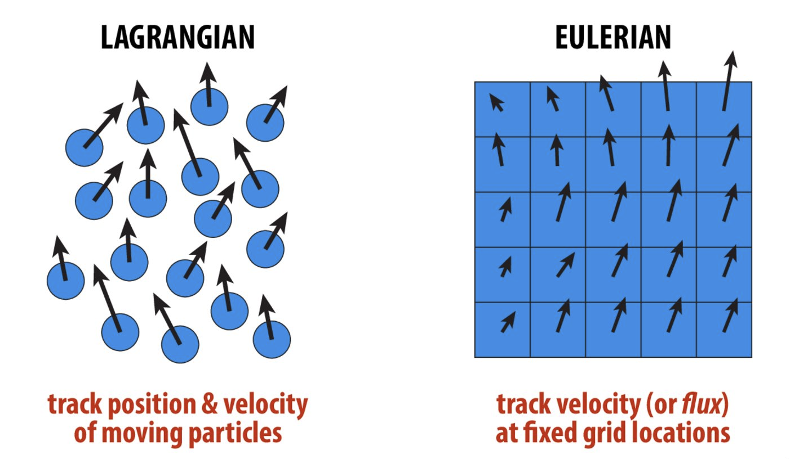
Lagrange vs. Euler (Quelle: CMU 15-462)
Von Punkten zu Schritten
Typische Analysepipeline

Workflow (nach Joo et al. 2020)
- Vorverarbeitung — Rohdaten → x, y, t (GPS: direkt; GLS: Lichtintensität → Position)
- Nachverarbeitung — Ausreißer erkennen und entfernen
- Analyse — Home Ranges, Habitatwahl, Bewegungsmodelle …
Ortungen — die Grunddaten
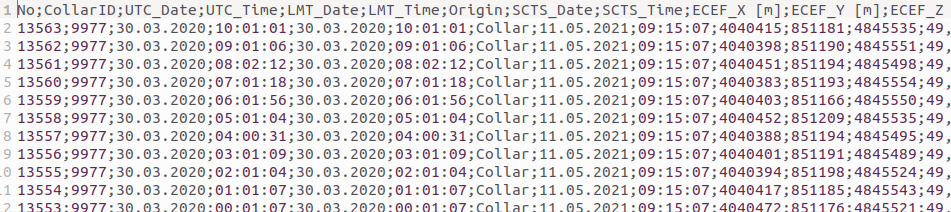
- Typischerweise: Zeitreihe von Koordinaten (
x,y) + Zeitpunktt - Je nach Sensor: Temperatur, Projektionskoordinate, Akkustatus, …
Pfad, Zug und Schritt — Definitionen
- Pfad (Path): Kontinuierliche Spur eines Tieres durch den Raum.
- Bewegung (Move): Jeder Pfad wird als Serie von Geraden dargestellt — Verlagerung zwischen zwei aufeinanderfolgenden Haltepunkten.
- Schritt (Step): Haltepunkte des Pfades in regelmäßigen Zeitintervallen — die Grundeinheit unserer Analysen.
Bursts und Resampling

Tracks und Bursts
- Ein Burst ist eine Sequenz von Relocations desselben Individuums mit gleichen Zeitintervallen (mit Toleranz)
amt::track_resample()→ eine Relocation pro Zeitintervallamt::filter_min_n_burst()→ Bursts mit zu wenigen Punkten entfernen
Schritte berechnen
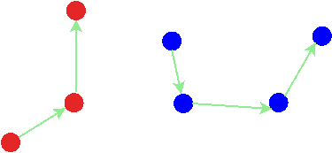
library(amt)
data("deer")
deer |>
track_resample(rate = hours(6), tolerance = minutes(20)) |>
filter_min_n_burst(min_n = 3) |>
steps_by_burst() |>
glimpse(width = 55)Rows: 788
Columns: 11
$ burst_ <dbl> 1, 1, 1, 1, 1, 1, 1, 1, 1, 1, 1, …
$ x1_ <dbl> 4314068, 4314053, 4314105, 431404…
$ x2_ <dbl> 4314053, 4314105, 4314044, 431301…
$ y1_ <dbl> 3445807, 3445768, 3445859, 344578…
$ y2_ <dbl> 3445768, 3445859, 3445785, 344585…
$ sl_ <dbl> 41.777390, 104.302578, 95.261565,…
$ direction_p <dbl> -1.952253, 1.045656, -2.266433, 3…
$ ta_ <dbl> NA, 2.99790876, 2.97109629, -0.94…
$ t1_ <dttm> 2008-03-30 00:01:47, 2008-03-30 …
$ t2_ <dttm> 2008-03-30 06:00:54, 2008-03-30 …
$ dt_ <drtn> 5.985278 hours, 6.014722 hours, …Kenngrößen eines Schrittes
sl_— Schrittlänge: Distanz zwischen zwei aufeinanderfolgenden Ortungen- Abhängig vom Zeitintervall zwischen Ortungen
ta_— Relative Richtungsänderung zwischen zwei aufeinanderfolgenden Schritten- 0 = geradeaus, ±π = Umkehr
- NSD — Net Squared Displacement: Wie weit bewegt sich das Tier vom Startpunkt?
- Gut für Erkennung von Migration, Heimkehr, Dispersion
Statistische Verteilungen für Schritt und Richtung
Warum brauchen wir Verteilungen?
Tiere bewegen sich nicht deterministisch — es gibt Variabilität in Schrittlängen und Richtungen.
Wir modellieren diese Variabilität mit Wahrscheinlichkeitsverteilungen, um:
- beobachtete Bewegungen zu beschreiben und zusammenzufassen
- Bewegungen zu simulieren (Nullmodelle)
- Parameter zu schätzen und zwischen Verhaltensweisen oder Individuen zu vergleichen
- Zufallsbewegungsmodelle (z.B. Random Walk (RW)) formal zu definieren
Schrittlänge: Die Gamma-Verteilung
\[\text{sl} \sim \text{Gamma}(\alpha, \beta) \quad [\alpha, \beta > 0]\]
- \(\alpha\) (shape): bestimmt die Form der Kurve
- klein → stark rechtsschief (viele kurze Schritte)
- groß → annähernd glockenförmig
- \(\beta\) (scale): bestimmt den Skalierungsparameter
- mittlere Schrittlänge \(\propto \alpha \cdot \beta\)
- Nur für positive Werte definiert → ideal für Distanzen
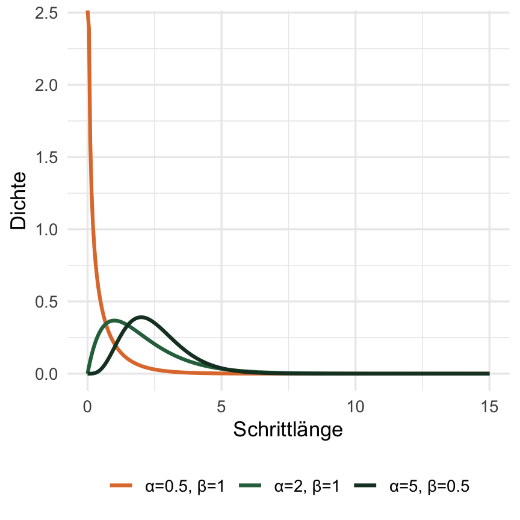
Richtungen: Von-Mises-Verteilung
\[\theta \sim \text{vonMises}(\mu,\; \kappa) \quad [\kappa \geq 0]\]
- \(\mu\): mittlere Richtung (immer 0, da wir davon ausgehen, dass die Tiere gerade weiter gehen).
- \(\kappa\) (Konzentration): Wie stark ist die Richtung konzentriert?
- \(\kappa = 0\) → gleichmäßig auf dem Kreis → kein Richtungssinn (RW)
- \(\kappa \gg 0\) → starke Konzentration um \(\mu\) → gerichtete Bewegung (CRW)
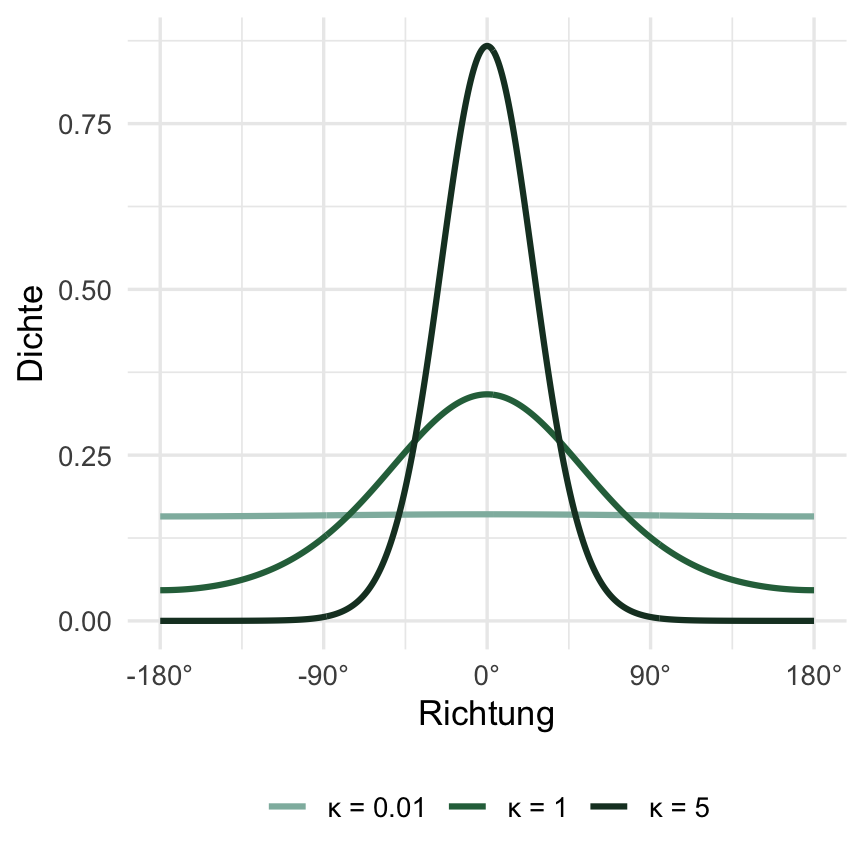
Verteilungen anpassen — in R mit amt
$name
[1] "vonmises"
$params
$params$kappa
[1] 0.07537453
$params$mu
Circular Data:
Type = angles
Units = radians
Template = none
Modulo = asis
Zero = 0
Rotation = counter
[1] 0
$vcov
[,1]
[1,] 0.05043294
attr(,"class")
[1] "vonmises_distr" "ta_distr" "amt_distr" "list" 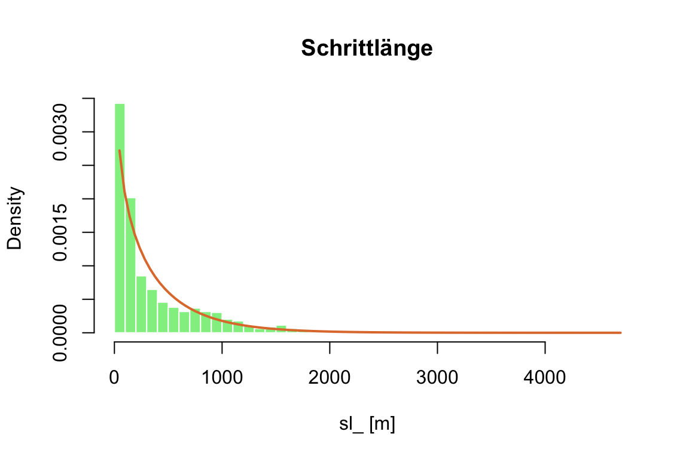
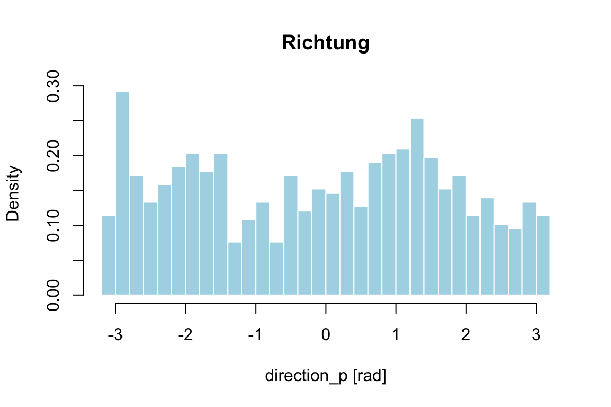
Welche Eigenschaften braucht eine Verteilung?
Normalverteilung ist weit verbreitet, aber ungeeignet für Schrittlängen und Richtungen:
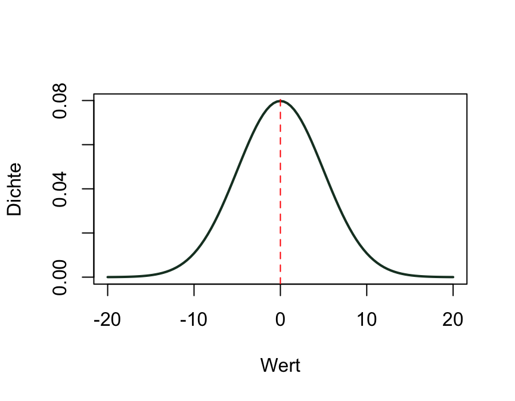
- Interaktive Gamma-Verteilung: https://jmsigner.shinyapps.io/gamma/
- Interaktive Von-Mises Verteilung: https://jmsigner.shinyapps.io/vonmises/
Parameter spiegeln Verhaltensweisen wider
Parameter von Schrittlängen- und Richtungsverteilungen können sich ändern und zeigen damit unterschiedliche Verhaltenszustände an (z. B. Nahrungssuche vs. Ruhe):
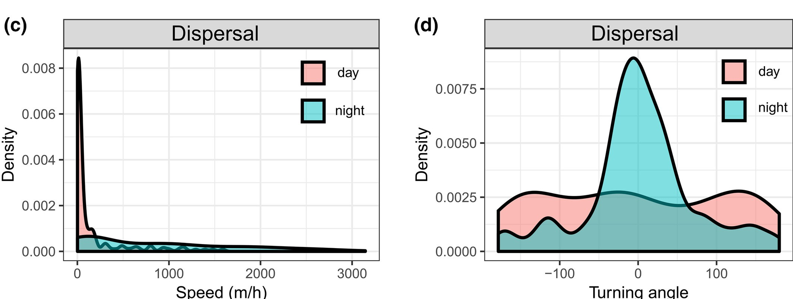
Moll et al. 2021: Tag vs. Nacht — verschiedene Parameter, verschiedene Verhaltensweisen
Bewegungsmodelle
Vier Klassen von Bewegungsmodellen
Zufallspfade (diskrete Zeit) unterscheiden sich darin, ob sie Richtungskorrelation oder Bias aufweisen:
| Modell | Korrelation | Bias |
|---|---|---|
| RW (Random Walk) — Einfacher Zufallspfad | ✗ | ✗ |
| CRW (Correlated Random Walk) — Korrelierter Zufallspfad | ✓ | ✗ |
| BRW (Biased Random Walk) — Gerichteter Zufallspfad | ✗ | ✓ |
| BCRW (Biased Correlated Random Walk) — Gerichtet & korreliert | ✓ | ✓ |
Die Unterscheidung erfolgt durch die Parametrisierung der sl_- und ta_-Verteilungen.
Einfacher Zufallspfad (RW)
Schritt-Darstellung
\[l_t \sim \text{Gamma}(\alpha, \beta)\] \[\theta_t \sim \text{vonMises}(\mu,\; \kappa = 0)\]
\[\Delta x_t = l_t \cos(\theta_t)\] \[\Delta y_t = l_t \sin(\theta_t)\]
- \(\theta_t\) ist Absolutrichtung — gleichmäßig verteilt (\(\kappa = 0\))
- Jeder Schritt ist unabhängig vom vorherigen
- Positionen folgen einem Markov-Prozess 1. Ordnung
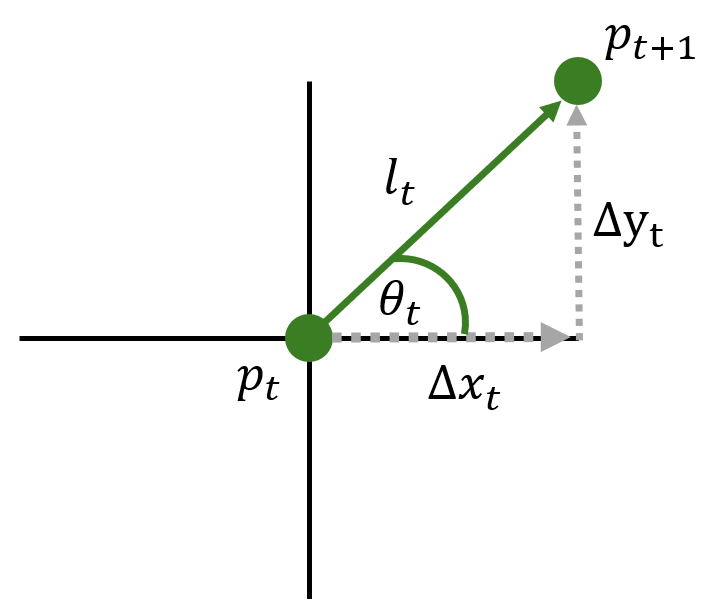
Korrelierter Zufallspfad (CRW)
Schritt-Darstellung
\[l_t \sim \text{Gamma}(\alpha, \beta)\] \[\Delta\theta_t \sim \text{vonMises}(0,\; \kappa > 0)\]
\[\theta_t = \theta_{t-1} + \Delta\theta_t\]
- \(\Delta\theta_t\) ist relative Richtungsänderung
- \(\theta_t\) hängt von \(\theta_{t-1}\) ab → Richtungskorrelation
- Je größer \(\kappa\), desto geradliniger die Bewegung
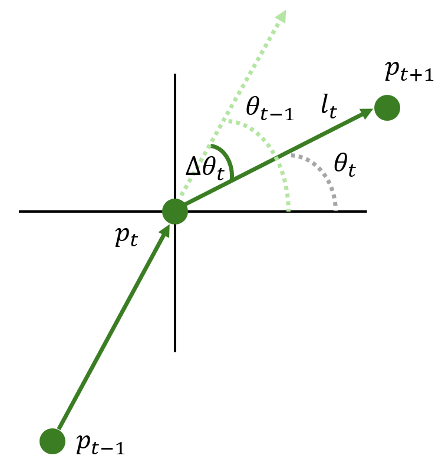
Gerichteter Zufallspfad (BRW)
Lokaler Bias
- Anziehung zu einem nahen Ziel (z. B. Wasserstelle, Schlafplatz)

Globaler Bias
- Anziehung zu einem entfernten Ziel (z. B. Zugvogelziel)

Biased Correlated Random Walk (BCRW)
- Kombination aus Richtungskorrelation (\(\kappa > 0\)) und globalem/lokalem Bias
- Realistischstes Modell für viele Wildtiere
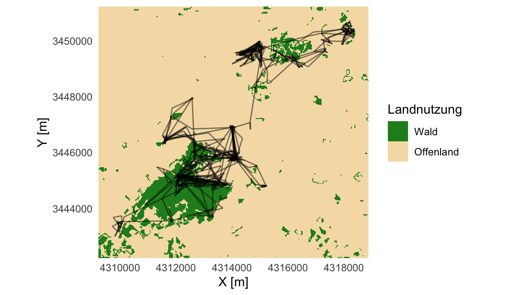
Weißwedelhirsch mit Wald-Landschaft — ein typisches BCRW
Fallstudie: Moll et al. 2021
Weißwedelhirsch-Dispersion
Hintergrund der Studie
Remington Moll beobachtete eine seltene Langstrecken-Dispersion bei Odocoileus virginianus (Weißwedelhirsch)1.
- GPS-Tracking lieferte hochauflösende Ortungsdaten
- Analyse: Verteilung von Schrittgeschwindigkeit (Proxy für Schrittlänge) und Richtung — getrennt für Tag und Nacht
- Hinweis: Moll et al. verwenden Geschwindigkeit (Schrittlänge / Zeitintervall) statt Schrittlänge direkt — die biologische Interpretation bleibt gleich
Diskussion (3 min)
Wie erwarten Sie, dass sich der Hirsch tagsüber vs. nachts während der Dispersion verhält?
Welche Parameterunterschiede erwarten Sie in der Gamma- und Von-Mises-Verteilung?
Ergebnisse: Tag vs. Nacht
Schrittgeschwindigkeit
| Tag | Nacht | |
|---|---|---|
| Gamma \(\alpha\) | kleiner | größer |
| Gamma \(\beta\) | kleiner | größer |
| Mittlere Geschw. | niedrig | hoch |
→ Viele kurze Schritte tagsüber
→ Längere, schnellere Bewegung nachts
Richtung
| Tag | Nacht | |
|---|---|---|
| vonMises \(\kappa\) | klein | groß |
| Richtungssinn | schwach | stark |
| Bewegungstyp | ≈ RW | CRW |
→ Tagsüber: ungerichtete Bewegung / Ruhe
→ Nachts: gerichtete Dispersion
Biologische Interpretation
- Nachtaktive, gerichtete Dispersion (CRW, hohes \(\kappa\)):
- Tier bewegt sich zielgerichtet und mit Richtungspersistenz
- Große Schrittlängen/-geschwindigkeiten
- Kryptisches Ruheverhalten am Tag (≈ RW, kleines \(\kappa\)):
- Geringe Geschwindigkeit → Rast, Nahrungssuche auf kleinem Raum
- Richtung nahezu gleichmäßig auf dem Kreis verteilt
- Methodische Schlussfolgerungen:
- Parameterschätzung von Gamma und Von-Mises ist informativ über Verhaltensweisen
- Moll et al. nutzen genau diese Verteilungsunterschiede als Evidenz für Dispersionsbewegung